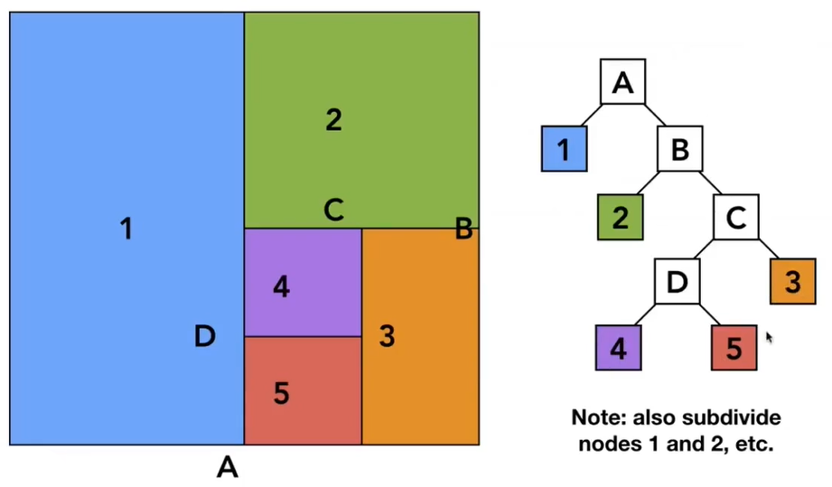
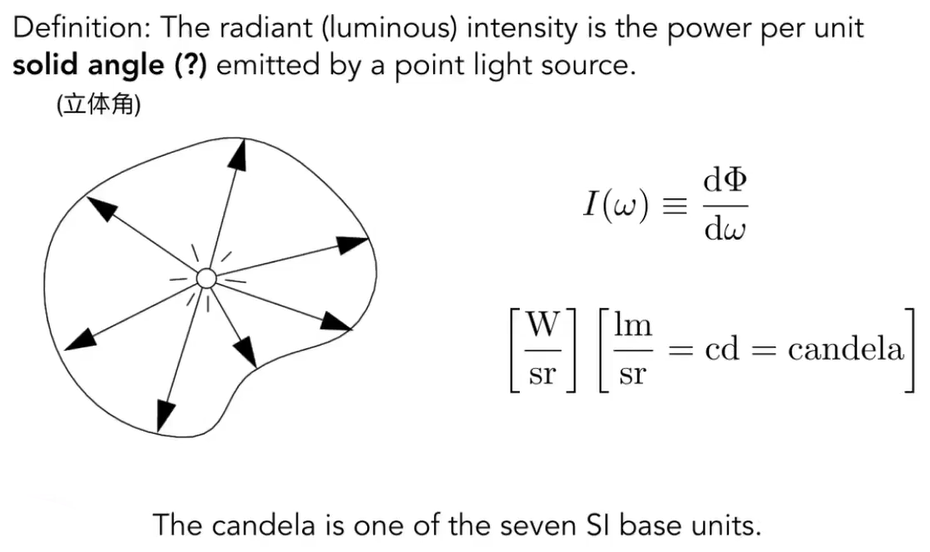

[图形]光线追踪
Why Ray Tracing
光栅化成像很快，是一种近似的成像方法。但是对于全局效果很难处理。比如软阴影、多次反射、间接光照。光线追踪是准确成像，但是速度很慢
Light Rays
图形学认为的光线：
- 光线是沿直线传播的
- 光线和光线之间不会发生碰撞
- 光线从光源发射，最后进入摄像机
因为光线是可逆的，所以我们可以反过来，从眼睛出发，发射一系列光线去追踪到光源
当你在凝视深渊的时候，深渊也在凝视着你 –
黑魂
所以光线追踪是从摄像机出发，最终追踪到光源
Ray Casting
Pinhole Camera Model
假设：
- 摄像机是一个点，不考虑真实相机的处理
- 光源是点光源
- 光线会发生完美的折射或反射
追踪过程：
- 从摄像机发射的光线
- 记录最近碰撞的点
- 从最近点与光源连线，如果没有碰到其他说明未被阻挡
- 着色

其实这还是只考虑光线弹射一次
Recursive Whitted-Style Ray Tracing
与上面种模型不同的是，光线碰到点之后，可以继续传播，可能会生成反射啊折射之类的新射线
在着色时，会对每一个发生新光线的点都计算一次颜色，最后叠加，每一个点的颜色对最终颜色的影响程度和光线强度有关

数学上的光线是一个射线，有一个起点和方向

所以光线上任何一个点的位置都可以用o+td计算出来

光线要和球面相交，也就是说交点p既在光线路径上，也在球面上，而我们很容易写出球的解析式。那么把两个解析式联立，就可以解出t，就是光传播多久就能打到球
推广到隐式表示的几何体，都可以用这种办法求出光线与它们的交点
但是如果是显式几何体，如何去求光线与几何体的交点呢
三角形在空间中是一个平面，那我们可以求出光线与平面的交点，再判断交点是否在三角形内。
平面可以用一个点和法线来定义


很容易求出t
还有更简便的办法

等式左边是光线，如果光线与三角形交点在三角形内，那么就可以把交点写成重心坐标的形式。现在只要解出t、b1、b2，其实就是解出这个线性方程组（克莱姆法则）。解出来之后，判断b1、b2、1-b1-b2都是非负数，那么点就在三角形内。
现在我们可以求出光线和三角形的交点了，那么实际处理的时候，只要对每个三角形都进行一次运算，找出最近的三角形就可以了。但是这样很慢（复杂度=像素数量x场景物体数量x光线弹射数量），还有可以加速运算的方法。
Bounding Volumes
用一个包围盒将物体包起来，保证物体一定在盒内。然后碰撞的时候先碰包围盒。
如果光线连包围盒都碰不到，那肯定碰不到盒内的物体


包围盒就是6个平面（3组对面）形成的交集
通常的包围盒叫做Axis-Aligned Bounding Box。意思是说，长方体任意一个轴都与对应的x，y，z平面平行（就是边都是横平竖直的）
现在计算射线和三组对面的相交时刻，进入包围盒的时间就是三组时刻中最大的那个，出包围盒的时刻就是所有时刻最小的那个。如果进入时间小于离开时间，那么就和碰撞盒有交点。
但是现在我们考虑的光线还是直线，如果t算出来是负数怎么办？
- 当离开时间小于0，其实就是盒子在光线后面，那就不可能有交点
- 当进入时间小于0且离开时间大于等于0，说明光线起点在盒子里面
总结一下，当且仅当光线进入时间小于离开时间且离开时间大于等于0，和AABB有交点。
在计算光线和包围盒平面交点其实还能简化

Spatial Partitions
Uniform Grids


如果网格数量太少起不到加速效果，太多反而会拖慢速度，需要取一个平衡。
从经验上来说，网格数量 = 27 * 场景物体数量（三维）（只是个经验）
KD-Tree

ABCD这样的中间节点只需要存储接子节点，叶节点来储存包围盒
判断交点过程：
- 光线先和根节点表示的包围盒求交，发现相交，则去1节点和A节点
- 在1节点，发现光线和该节点的包围盒相交，而且是叶节点，则和节点存的所有物体求交
- 在A节点，发现光线和该节点的包围盒相交，则继续去A的子节点。
- 递归
KDTree有些小问题
- 建树不简单，可能会有跨边界的三角形，而判定框是否与三角形相交很困难
- 有时候，会有物体和多个区域相交
Object Partitions
Bounding Volume Hierarchy(BVH)

有一个大包围盒包含所有物体，然后按一定规则，把包围盒内的物体划分成两部分，递归。
划分的时候，为了让节点在空间中能有均匀分布，要沿最长的轴分成两半（比如一个很长的横条，中间竖着切一刀，左右两边还是长条，继续竖着切）。一般要保证树左右子节点里面三角形数量平均
和KDTree一样，中间节点也只存子节点，叶节点存包围盒
Basic Radiometry 辐射度量学
在Blinn-Phong模型中，我们定义了一个光照强度。使用的时候这只是个参数。但是这个强度到底是什么意思呢？
在Whitted风格的光线追踪中，定义了光线是完美的反射，没有任何损失啊偏转啊之类的东西。但是实际上这是不可能的。
辐射度量学会精确地定义真实光线地物理特性。
前提定义：
- 光线还是沿直线传播，不考虑波动性
- 研究的光线是空间中的，不研究时间上的
- 新概念：radiant flux、intensity、irradiance、radiance
Radiant Energy and Flux(Power)

- Radiant Energy 辐射能量：辐射的能量，单位焦耳，符号Q
- Radiant Flux 辐射通量：单位时间的辐射能量（功率），单位瓦特，符号同Φ。或者单位流明，符号lm。还有一种理解方式是单位时间内，通过单位平面的光子数量

- Radiant Intensity：单位立体角辐射的能量，单位candela，符号cd

- A是球上面积，立体角=面积除以半径平方。立体角是弧度在三维空间中的延升，单位steradians

- θ和Ф可以确定球上一个点。就能算出立体角大小。如果把整个球用公式积分，结果是4π

- 一个点光源，任何方向上的强度就是它的能量除以4π，可以得到对应方向上的强度